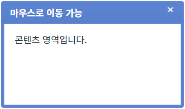
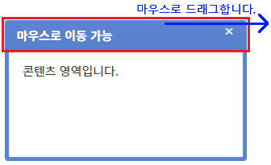
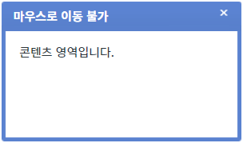
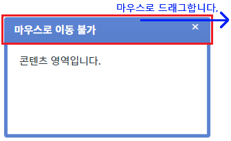

속성 'fixed'의 설정을 통해 'FloatingLayer'의 위치를 고정하는 예제입니다. (사용자가 타이틀 영역을 마우스로 드래그하여 팝업을 이동시킬 수 없습니다.) 마우스로 드래그를 할 수 있는 영역은 'FloatingLayer'의 테두리 영역(상하좌우)으로 배경색이 설정되어 있습니다.
설정 값에 따른 동작은 다음과 같습니다. - "false" : [default] 위치를 고정하지 않습니다. 사용자가 마우스로 드래그하여 위치를 이동시킬 수 있습니다. - "true" : 위치를 고정합니다. 사용자가 마우스로 드래그하여 위치를 이동시킬 수 없습니다.
- 'FloatingLayer'의 위치는 절대 값으로(display:absolute) 콘텐츠의 길이에 따라 위치가 변경되지 않습니다.
- 이 예제는 마우스 사용이 가능한 환경에서 정상 동작합니다.
위치 고정하지 않기
위치 고정하기
STEP 1. 위치를 고정하지 않은 'FloatingLayer'를 표시합니다.
예제 영역 [(기본 설정) 위치 고정하지 않기]의 버튼 1.1 FloatingLayer 표시하기를 클릭합니다.
STEP 2. 실행된 결과를 확인합니다.
'FloatingLayer'가 버튼 하단에 표시됩니다. 타이틀은 '마우스로 이동 가능'입니다.
그림 1.브라우저(Chrome) 실행 예시

STEP 3. 타이틀 영역을 마우스로 드래그하여 위치를 이동시킵니다.
그림 2.브라우저(Chrome) 실행 예시

STEP 4. 실행된 결과를 확인합니다.
위치가 이동됩니다.
STEP 1. 위치가 고정된 'FloatingLayer'를 표시합니다.
예제 영역 [위치 고정하기]의 버튼 2.1 FloatingLayer 표시하기를 클릭합니다.
STEP 2. 실행된 결과를 확인합니다.
'FloatingLayer'가 버튼 하단에 표시됩니다. 타이틀은 '마우스로 이동 불가'입니다.
그림 3.브라우저(Chrome) 실행 예시

STEP 3. 타이틀 영역을 마우스로 드래그하여 위치를 이동시킵니다.
그림 4.브라우저(Chrome) 실행 예시

STEP 4. 실행된 결과를 확인합니다.
위치가 이동되지 않습니다.
속성을 정의합니다.
[필수] fixed="설정 값"
(설정 값)
- false : [default] 위치를 고정하지 않습니다. 사용자가 마우스로 드래그하여 위치를 이동시킬 수 있습니다.
- true : 위치를 고정합니다. 사용자가 마우스로 드래그하여 위치를 이동시킬 수 없습니다.
fixed